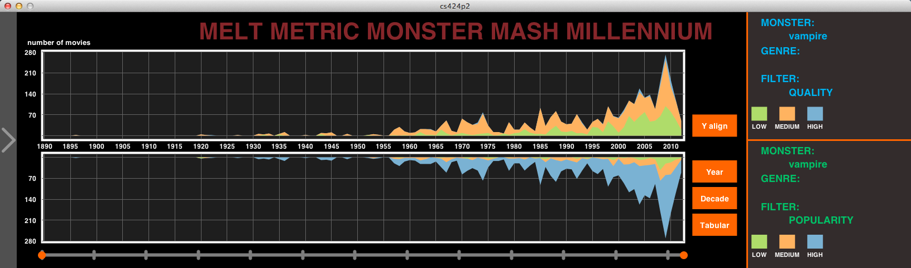

Welcome to the homepage of Group 8's second project of CS424 at UIC in Fall 2012 Semester, Monster Mash.
Course website is at http://www.evl.uic.edu/aej/424/index.html
Team members of group 8 are: Claudio Caletti, Giorgio Cavaggion, Shi Yin.
As the second application and first group project of CS424, the purpose of this project are:
- learn how to convert data from huge data sets to form that can be visualized using Processing
- learn how to collaborate with teammates in a very stressful range of time
- learn how to create an effective user interface for viewing and analyzing data
- learn how to integrate different components of code into one whole application
Introduction

Fig.1 Overview of the timeline interface
The basic idea of this project is to grab massive data from Internet Movie Database and use them as recourse to visualize movies about a variety of monsters and visualize monsters in movies, providing multiple options to user.
User can selecting (zero or one) of a variety of monsters and (zero or one) genre of movie and one of six filters we created. Data will be automatically clustered by different levels/categories for each filter.
User will also be able to select a range of time to view, see raw data in tabular form, cluster the data by decade and check top 10 monsters for decades and overall.

Fig.2 Overview of the taxonomy interface
Besides this multi-functional timeline, we also created a fantastic monster taxonomy page to let users to focus on particular monsters rather than movies. User can drag monster nodes and open information panel for each monster or monster group.
Fig.3 Overview of the movie interface
The third part of our app is movie page where user can check information about movies, just like at IMDb.
Mission Accomplished
| Requirements | Completion |
|---|---|
| overall timeline with good color coding scheme and intuitive interface menu allowing the user to query type of monster, genre, format, quality, and popularity data, showing one set of data at a time | not color blind safe, but unsafe colors are not in adjacent level(i.e. something in between can somewhat let user distinguish unsafe colors |
| tabular version of data shown in the timeline | Y |
| help screen and author credits screen | Y |
| fully functional with intuitive touch interface running on the full classroom wall | works fine, and no control that are too high to touch |
| interactive timeline (being able to choose a range of dates) | Y |
| cluster timeline data by decade | Y |
| cluster monsters by some intelligent scheme that your group comes up with | see taxonomy |
| ability to compare multiple combinations of data simultaneously | see all clusters at once and compare between two different filters |
| integrate country of origin data into the timeline allowing visualization and filtering | Y |
| start with sample interesting/fun/useful starter queries for the user | Y |
| show top 10 monster types per decade and overall | access via pop-up menu in timeline |
| ability to search for a particular film by name with intelligent help (filtering, auto-complete) | Y |
| common keyword, genre, country of origin, budget level, format, certificates, quality, visualization for a given monster or combination of monsters | Y |
| be able to get information on particular films that make up the current graph (e.g. name plus all of the information you can search on) | N |
| integrate inflation and currency adjusted budget data into the timeline allowing visualization and filtering | Y |
| integrate US certificates (G, PG etc) into the timeline allowing visualization and filtering | Y |
| add a second language to the interface (UI elements, monster types, genres, country of origin). | Y |
| integrate events that may affect this data to look for correlations | access via pop-up menu |
| discuss five interesting findings or evidence to support conclusions using the interface | see findings page |